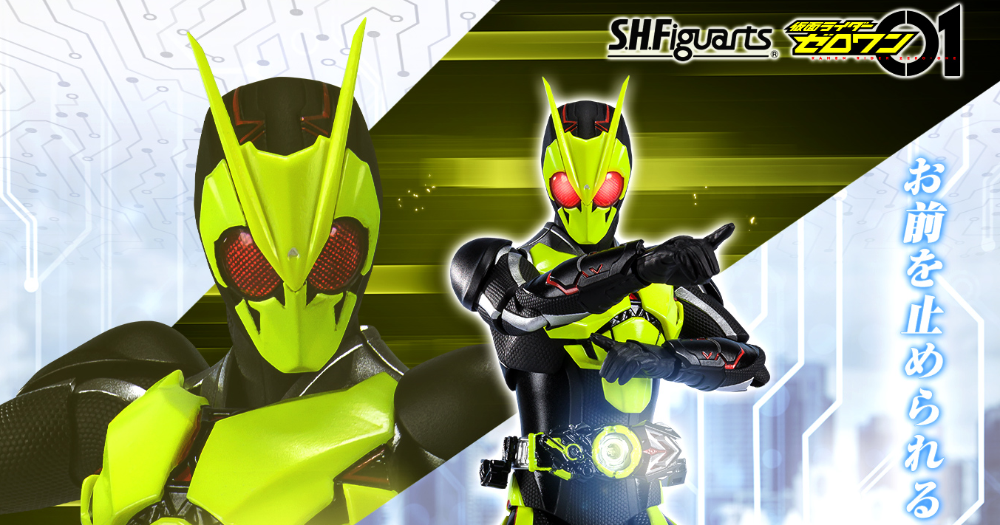
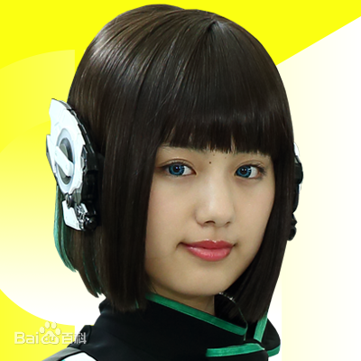

假面骑士零一
剧情简介:
舞台为迎向新时代的日本。人工智能的龙头企业“飞电智能”所开发的人形AI机器人“人机偶”的运行正式开始启动。“人机偶”其制作地精致到与人类差异不大，因而易于融入各行各业职场。
另一方面对这种良好状况不认同的恐怖组织“灭亡迅雷.net”，将人机偶骇入使其失控，企图消灭人类。然而政府早已查知他们的行动，并设立直属于内阁官方的对人工智能特务机关“A.I.M.S.”。目的在于镇压失控的AI机器人与维持治安。
其中，没有搞笑才能却以搞笑艺人为目标的飞电或人，其活跃的搞笑场地遭到AI夺走。因而受到打击的或人，得知创立“飞电智能”的创办人同时为社长的祖父死讯。在他遗留下来的遗言中，指定或人担任“飞电智能”的第二任社长。
对大企业的社长没兴趣的或人，其眼前却出现因“灭亡迅雷.net”的骇入而失控的人机偶。因此接受只有“飞电智能”的社长才能拥有的“飞电Zero-One驱动器”，进而变身成假面骑士Zero-One。
就任“飞电智能”的新社长，决定投身于与AI战斗的或人。他与“灭亡迅雷.net”的纠葛、敌视AI的“A.I.M.S.”、围绕在AI的开发与权利之间人们的竞争意图。
角色介绍:
飞电或人
高桥文哉、中野遥斗（幼年期）饰
假面骑士Zero-One、 假面骑士Zero-Two、假面骑士Ark-One以及假面骑士001的变身者。
22岁。原来是搞笑艺人。某日突然因祖父飞电是之助的遗言被任命为飞电智能的第二代社长，使用“飞电Zero-One驱动器”变身为假面骑士Zero-One与因“灭亡迅雷.net”而暴走的人机偶战斗。
宗像草太
配音：松村北斗(日语)、马正阳(大陆普通话)、庄汶锜(台湾普通话)
负责关闭会带来“灾难”的门的“闭门师”，为寻找出现在日本各地的门而旅行的青年。在前往有门的废墟的途中遇到了铃芽。后来变成了铃芽小时候用过的儿童椅样行动。